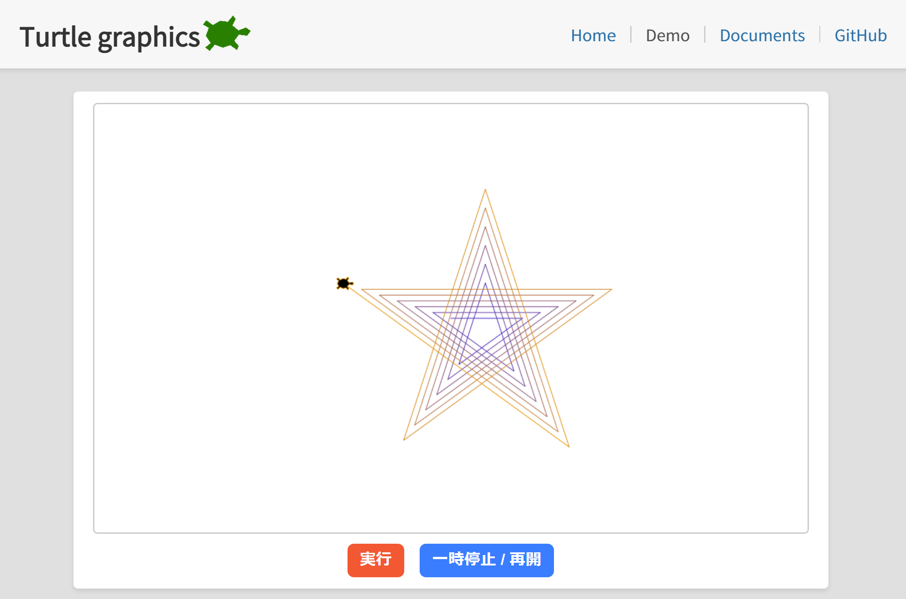
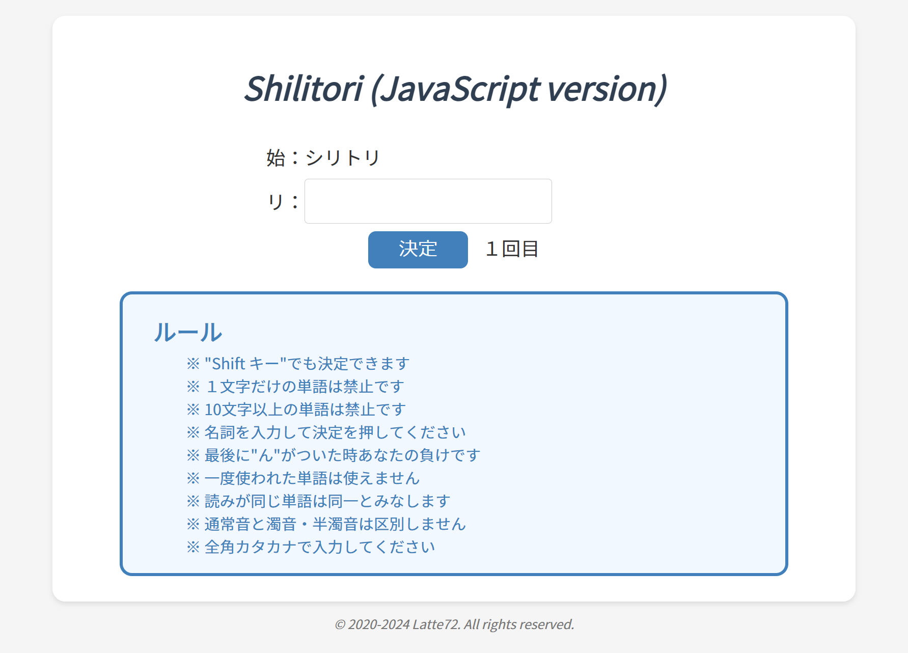
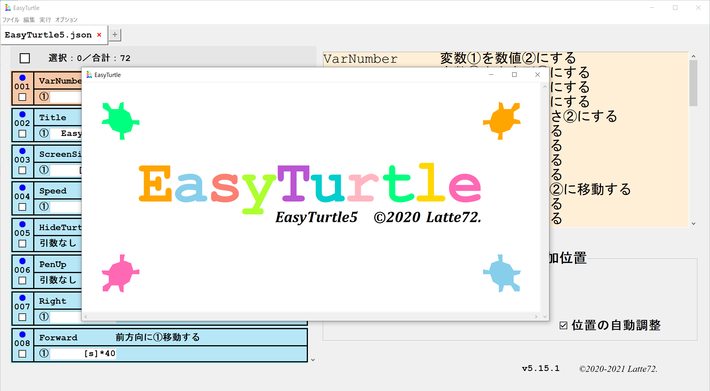
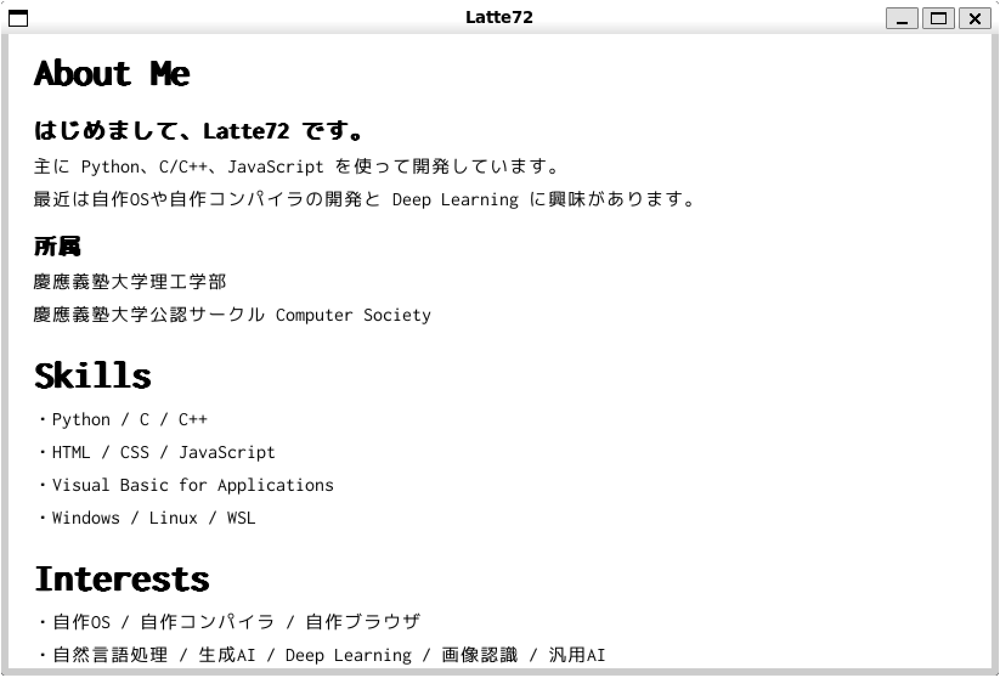
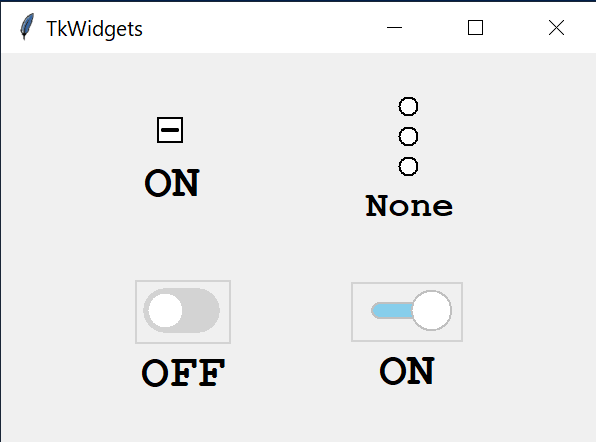

Turtle graphics

Documents：https://latte72r.github.io/TurtleGraphics/
GitHub：https://github.com/latte72r/TurtleGraphics/
Turtle graphics は、教育現場で教師がプログラミングの基礎を教えるために作られたツールです。
このサイトでは、JavaScript を使ってウェブブラウザから簡単に Turtle Graphics を体験できるようにアレンジしました。
ユーザーはシンプルなコマンドを入力するだけで、Turtle に指示を与え、さまざまな図形を描かせることができます。
ShilitoriJS

Documents：https://latte72r.github.io/ShilitoriJS/
GitHub：https://github.com/latte72r/Shilitori/
ShilitoriJS は、JavaScript を使用した「しりとり」ゲームです。
シンプルで直感的なインターフェースを採用していて、誰でも簡単に楽しむことができます。
プレイヤーは日本語の名詞を入力し、ルールに従って単語をつなげていくことで進行します。
EasyTurtle

Documents：https://latte72r.github.io/EasyTurtle/
GitHub：https://github.com/latte72r/EasyTurtle/
EasyTurtle は、GUI を利用して Python の Turtle モジュールを簡単に扱えるプログラムです。
Windows と Linux 環境で動作し、値の入力とクリックだけでプログラミングが可能です。
Latte&appos;s Simple Browser

Documents：https://latte72r.github.io/LSB/
GitHub：https://github.com/latte72r/LSB/
Latte&appos;s Simple Browser ( LSB ) は、独自に開発されたシンプルで軽量なブラウザです。
このプロジェクトは、ブラウザの基本機能を学びながら実装することを目的として設計されています。
TkWidgets

GitHub：https://github.com/latte72r/TkWidgets/
CheckButton、RadioButton、ToggleButton などのカスタムTkinterウィジェットのコレクションです。
標準のTkinterウィジェットと比較して、デザインと機能の面でより柔軟で拡張性のあるインターフェースを提供します。